底柱回采引起断层滑动的可能性评估
问题描述
注意
要在 3DEC 中查看此项目，请使用菜单命令 。选择“3DEC/ ExampleApplications/ fault_slip”，然后选择“seis.prj”进行加载。所用的主数据文件（main data file）显示在本示例的末尾。所有数据文件都可在该项目中找到。
一条厚 10 m 的垂直倾斜矿体在 950 至 1050 m 深度处采用分层充填法开采。已在两个不同水平进行开采，从而形成了一个底柱。计划自下而上分四个分层充填阶段回采该底柱。两条垂直断层与底柱相交，需要确定随底柱回采推进在这些构造上发生滑动的可能性。图 1（Figure 1）显示了矿体的平面和纵剖面形状，以及断层的位置和地应力的大小与方向。
矿石、围岩和充填体的属性如下：
| 矿石 | 围岩 | 充填体 | |
| 密度（kg/m3） | 2700 | 2700 | 2000 |
| 体积模量（GPa） | 17.6 | 3.2 | 0.03 |
| 剪切模量（GPa） | 13.2 | 9.9 | 0.014 |
| 黏聚力（MPa） | 10 | 8 | 0.05 |
| 内摩擦角（度） | 43 | 43 | 40 |
断层的属性为：
法向刚度（N/m）：1 × 1011
剪切刚度（N/m）：1 × 1011
黏聚力（MPa）：0
内摩擦角（度）：30

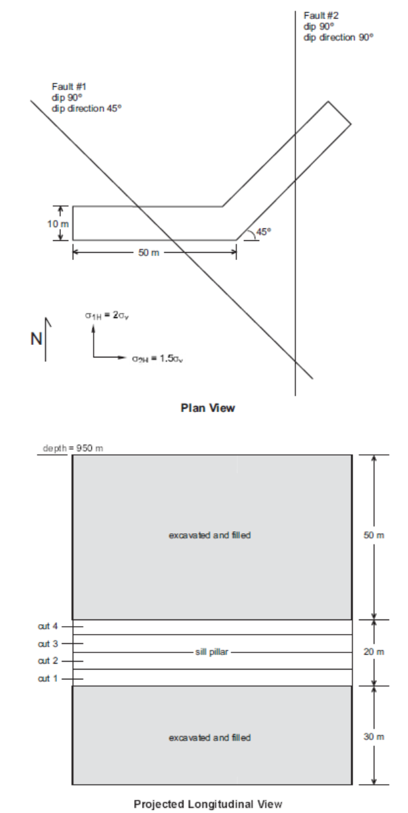
图 1：矿体、底柱与断层的示意图。
建模步骤
模型由文件“SEIS.DAT”生成。建立模型的第一步是使用 block cut joint-set、block hide 和 block hide off 命令将模型块体切割成更小的块体，从而确定矿体的水平边界。在分别定义矿体的各个分支之后，将矿体整体（贯穿模型整个竖向高度）标记为与围岩不同的区域。然后通过隐藏除矿体之外的整个模型，并用 block cut joint-set 命令生成各个水平分层，定义下部采场、上部采场和底柱各分层的竖向边界并将其标记为独立区域。使用 block hide、block hide off 和 block group 命令将各个采场和分层标记为独立区域。图 2（Figure 2）是 3DEC 模型中上部与下部采场的透视图。
在定义矿体和采场之后，切割两条断层，并将模型划分为内部、中部和外部区域以便划分网格。模型中的所有切割都必须在划分网格之前完成。内部区域对应于矿体周围的体积，采用棱边长度为 5 m 的常应变单元划分网格。中部和外部区域分别采用棱边长度为 20 m 和 80 m 的网格单元划分。划分网格后，将断层周围的所有块体连接起来，因为它们只是模型构建过程的产物，并不代表岩体中的真实不连续面。
在该模型中，围岩、矿石和充填体都假定服从莫尔-库仑材料行为。断层假定服从默认的节理本构模型，该模型包含点-面接触以及带库仑滑移破坏的弹性/塑性行为。模型的所有边界都用 block gridpoint apply 命令在各坐标方向施加零速度边界条件加以固定。模型施加与重力梯度相匹配的初始地应力。
模型达到初始平衡状态后，使用 block excavate 命令开挖上部与下部采场，并将模型运行至平衡。随后对这些采场进行充填，并按顺序开挖和充填底柱各分层。block fill 命令用于充填采场。通过该命令，可将构成充填体的块体和节理的本构模型与属性由原始材料更改为其他值。对本模型，属性更改为充填体的属性，同时节理被胶结（jmodel elastic）。这可防止断层穿过充填体的部位发生滑动。每个分层开挖后，先运行至平衡再充填，以模拟现实中充填的滞后。在上部与下部采场回采之后以及每个底柱分层之后，将断层上的位移重置为零，以便确定每个开采步骤对断层的影响。这对求解没有任何影响，因为求解过程中使用的是速度而不是位移。计算位移是为了方便用户使用。
模型包含 65,383 个网格单元，需要 13 MB 的内存。

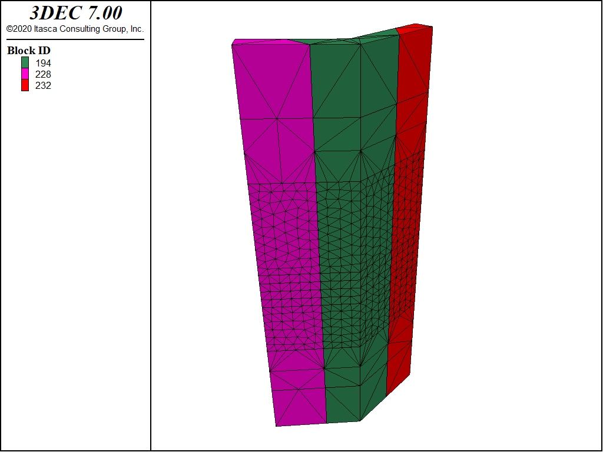
图 2：3DEC 模型中上部与下部采场的透视图。
结果
图 3（Figures 3）和4显示了回采上部与下部采场后 1 号断层和 2 号断层上的预测剪切位移和滑动面积。1 号断层表面为向西南视图，2 号断层表面为向东视图。断层上已发生滑动的区域用空心圆表示，剪切位移以等值线表示。如图所示，在断层与两个已开挖采场两侧相交处预测出现滑动区域和剪切位移。这是预期之中的，因为在开挖边界处岩块之间的相对运动自由得多。最大剪切位移为 1.5 cm，出现在 2 号断层与上部采场相交处。在 3DEC 模型中，上部与下部采场是一次开挖完成然后充填的。实际上，采场是逐步开挖和充填的。因此，该阶段预测的剪切位移在实际开采推进过程中会逐步发生。然而，底柱分层在模型中也采用逐步开挖和充填，因此位移可以作为开采步骤的函数来确定。
图 5（Figures 5）和10显示了四个底柱分层回采下两条断层的预测剪切位移和滑动面积。对于前 2 个分层（图 5（Figures 5）至8），剪切位移很小（2-8 mm），且仅限于当前分层附近的断层区域。在第 3 个分层（图 9（Figures 9）和10）中，当前分层与上部采场底部之间的矿体中也会发生滑动和剪切位移。剪切位移约为 1 cm，但滑动面积小于 50 m2。当回采第四个（也是最后一个）分层（图 11（Figures 11）和12）时，预测 2 号断层在与其开挖南边界相交处的滑动面积非常大（约 1850 m2），最大剪切位移为 2.4 cm。
回采第四个底柱分层后断层上滑动的方向，显示在图 13（Figure 13）中通过模型第四个底柱分层中部高度的平面剖面上。滑动方向与同一剖面图 14（Figure 14）中所示最大主应力的方向一致。
讨论
由于回采第四个底柱分层而在开挖南边界的 2 号断层上发生滑动所产生的势能输出，可由地震矩 M0（Aki 和 Richards，1980）估算，其定义为
其中 \(G\) 为岩体剪切模量，\(_s\) 为平均滑动量，\(A\) 为发生滑动的面积。基于 9.9 GPa 的岩体剪切模量、0.8 cm 的平均滑动量（最大剪切位移的三分之一）和 1850 m2 的滑动面积，预测地震矩为 1.47 × 1011 N-m。
地震事件的里氏震级 \(M\) 可由下式与地震矩相关联（Hanks 和 Kanamori，1979）：
该方程中 \(M_0\) 的单位为 dyne-cm。对于 2 号断层上 1.47 × 1018 dyne-cm 的地震矩，由上式可得里氏震级为 1.4。考虑到可能发生该量级的事件，且潜在岩爆距作业区很近，在此开采情景下应仔细考虑设计能够抵抗岩爆破坏的支护系统。还可以用该模型考察其他开采方法，以确定它们降低大型断层滑动地震事件发生可能性的潜力。
参考文献
Aki, K., and P. G. Richards. Quantitative Seismology. W. H. Freeman & Co., San Francisco (1980).
Hanks, T. C., and H. Kanamori. “A Moment Amplitude Scale,” J. Geophys. Res., 84, 2348-50 (1979).

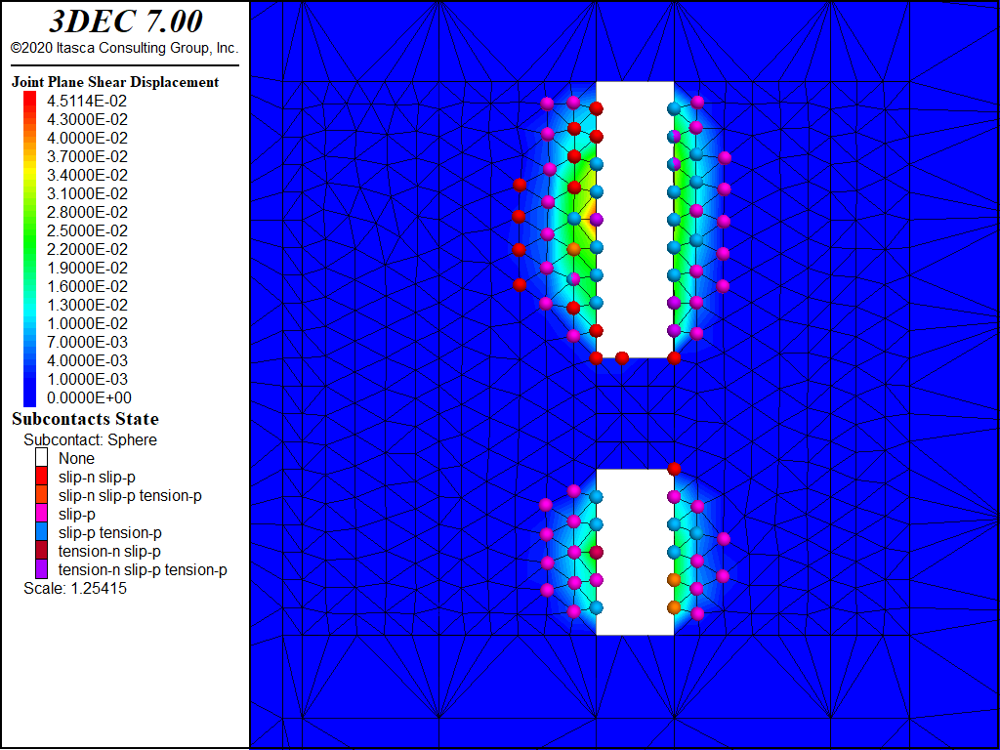
图 3：回采上部与下部采场后 1 号断层上剪切位移的 3DEC 图（向西南视图）。

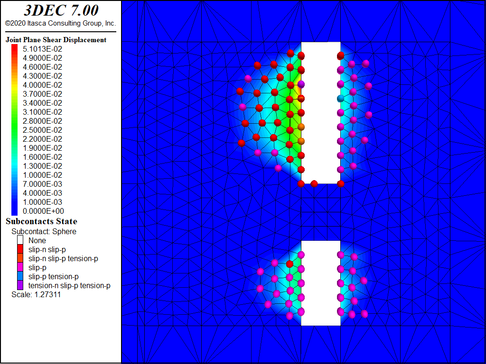
图 4：回采上部与下部采场后 2 号断层上剪切位移的 3DEC 图（向东视图）。

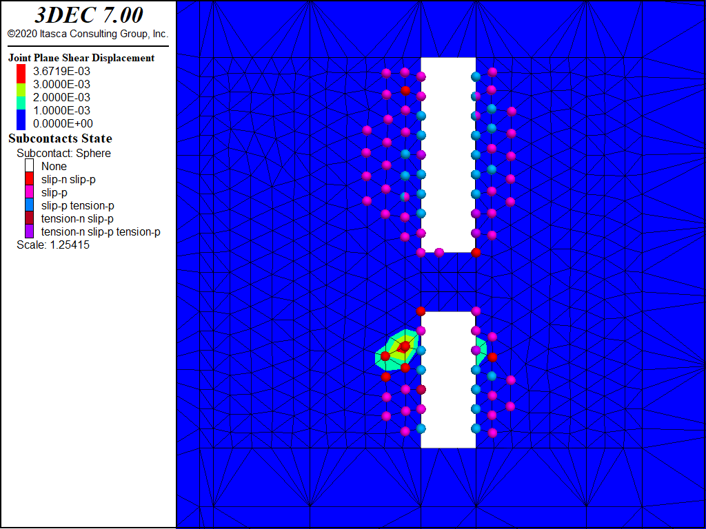
图 5：回采底柱第 1 分层后 1 号断层上剪切位移的 3DEC 图（向西南视图）。

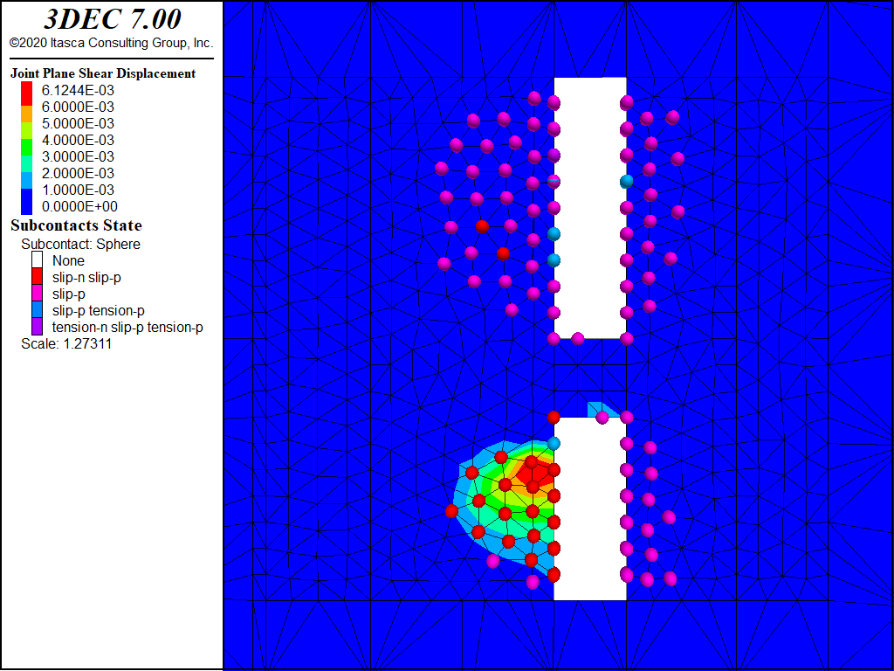
图 6：回采底柱第 1 分层后 2 号断层上剪切位移的 3DEC 图（向东视图）。

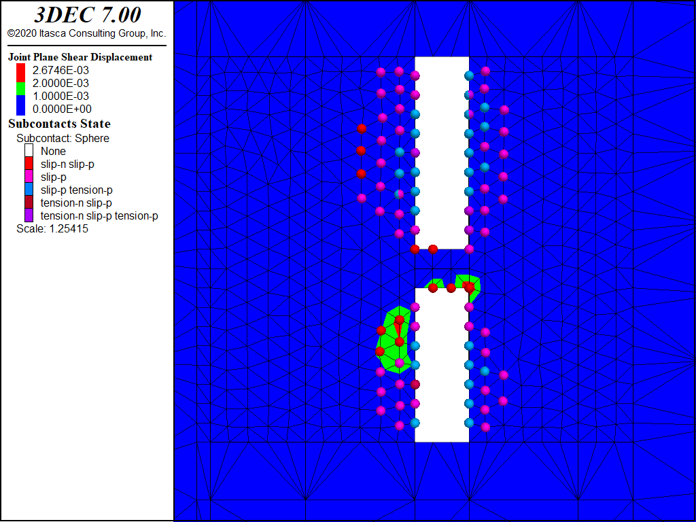
图 7：回采底柱第 2 分层后 1 号断层上剪切位移的 3DEC 图（向西南视图）。

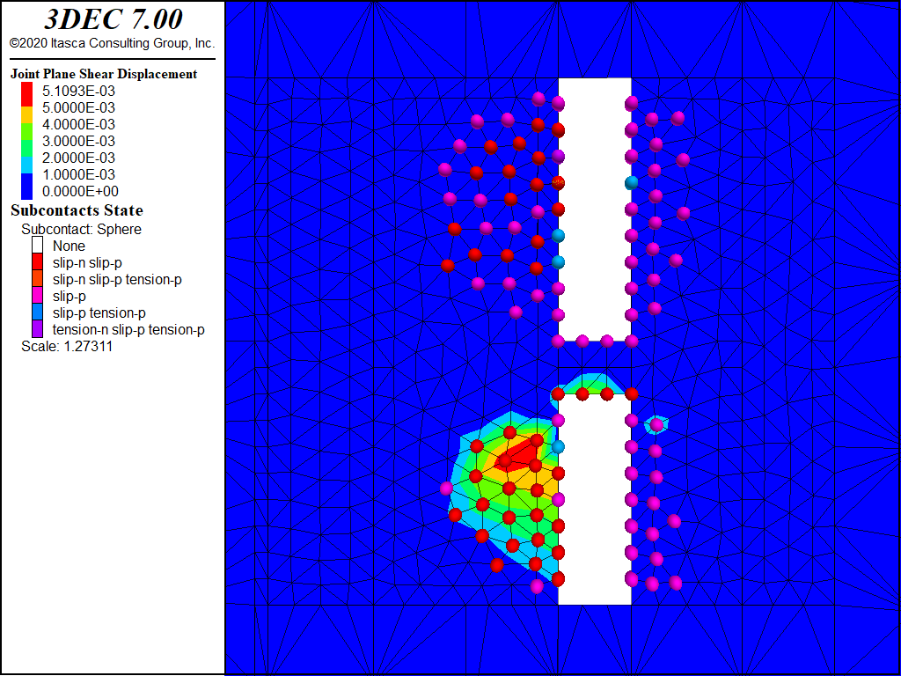
图 8：回采底柱第 2 分层后 2 号断层上剪切位移的 3DEC 图（向东视图）。

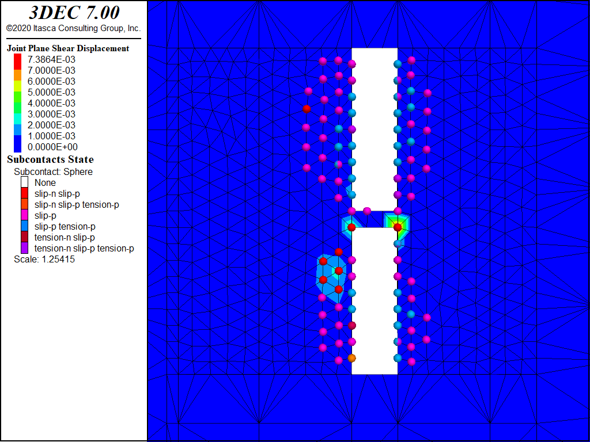
图 9：回采底柱第 3 分层后 1 号断层上剪切位移的 3DEC 图（向西南视图）。

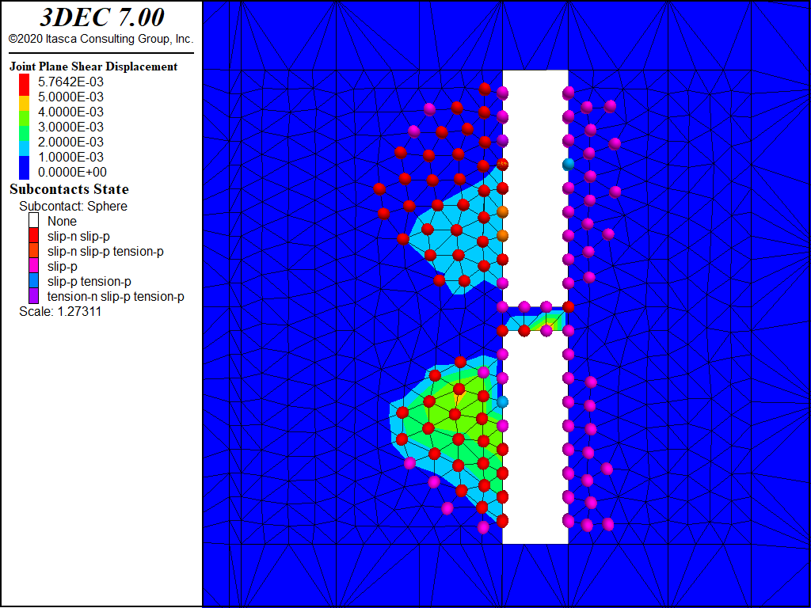
图 10：回采底柱第 3 分层后 2 号断层上剪切位移的 3DEC 图（向东视图）。

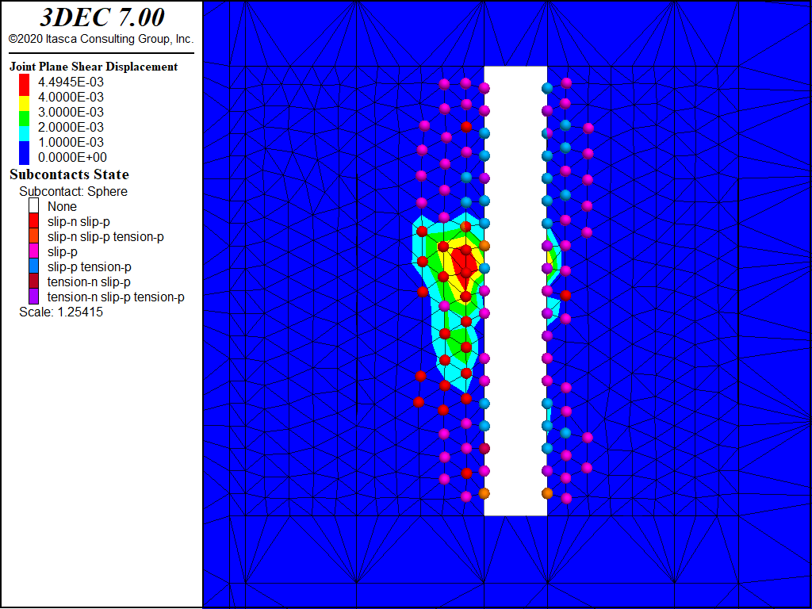
图 11：回采底柱第 4 分层后 1 号断层上剪切位移的 3DEC 图（向西南视图）。

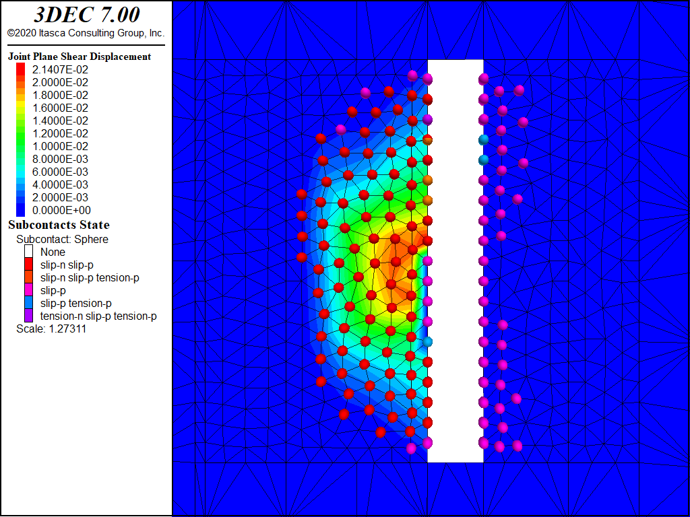
图 12：回采底柱第 4 分层后 2 号断层上剪切位移的 3DEC 图（向东视图）。

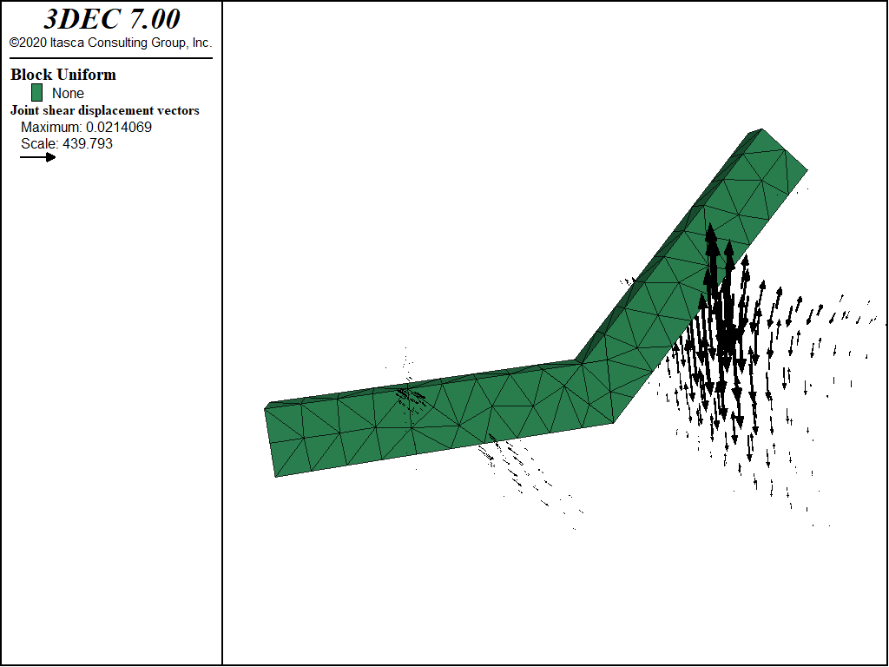
图 13：回采底柱第 4 分层后断层上剪切位移的 3DEC 矢量图（底柱第 4 分层中部高度的平面剖面）。

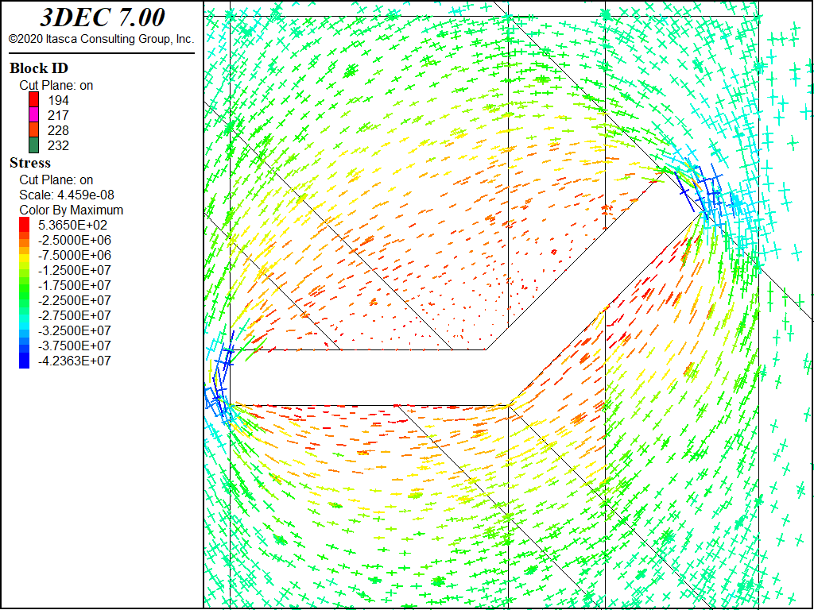
图 14：回采底柱第 4 分层后主应力的 3DEC 矢量图（底柱第 4 分层中部高度的平面剖面）。
数据文件
seis.dat
model new
model random 10000
model large-strain on
block create brick 880 1105 900 1130 3890 4110
block group 'rock' slot 'geology'
;创建矿体
block cut joint-set dip 90 dip-direction 90 ori 950 0 0
block hide range pos-x 880 950
block cut joint-set dip 90 dip-direction 90 ori 1000 0 0
block hide range plane pos-x 1000 1105
block cut joint-set dip 90 dip-direction 0 ori 0 1000 0
block hide range pos-y 900 1000
block cut joint-set dip 90 dip-direction 0 ori 950 1010 0
block hide range pos-y 1010 1130
block group 'orebody' slot 'geology'
block hide off
block cut joint-set dip 90 dip-direction 45 ori 1035 1035 0
block hide range plane dip 90 dip-direction 45 ori 1035 1035 0 above
block cut joint-set dip 90 dip-direction 225 ori 1000 1000 0
block hide range plane dip 90 dip-direction 225 ori 1000 1000 0 above
block cut joint-set dip 90 dip-direction 135 ori 1000 1000 0
block hide range plane dip 90 dip-direction 135 ori 1000 1000 0 above
block cut joint-set dip 90 dip-direction 315 ori 1028 1042 0
block hide range plane dip 90 dip-direction 315 ori 1028 1042 0 above
block group 'orebody' slot 'geology'
block hide off range group 'orebody'
;创建上部采场
block cut joint-set dip 0 dip-direction 0 ori 0 0 4000
block cut joint-set dip 0 dip-direction 0 ori 0 0 4050
block group 'upper stope' slot 'excavation' range pos-z 4000 4050
;创建下部采场
block cut joint-set dip 0 dip-direction 0 ori 0 0 3950
block cut joint-set dip 0 dip-direction 0 ori 0 0 3980
block group 'lower stope' slot 'excavation' range pos-z 3950 3980
;创建水平矿柱
block cut joint-set dip 0 dip-direction 0 ori 0 0 3985
block group 'sill pillar 1' slot 'excavation' range pos-z 3980 3985
block cut joint-set dip 0 dip-direction 0 ori 0 0 3990
block group 'sill pillar 2' slot 'excavation' range pos-z 3985 3990
block cut joint-set dip 0 dip-direction 0 ori 0 0 3995
block group 'sill pillar 3' slot 'excavation' range pos-z 3990 3995
block group 'sill pillar 4' slot 'excavation' range pos-z 3995 4000
block hide off
;创建断层
block cut joint-set dip 90 dip-direction 45 ori 975 1005 0 jointset-id 100
block cut joint-set dip 90 dip-direction 90 ori 1017.5 1017.5 0 jointset-id 200
;在矿体周围采用精细网格
block cut joint-set dip 90 dip-direction 90 ori 940 0 0
block hide range pos-x 880 940
block cut joint-set dip 90 dip-direction 90 ori 1045 0 0
block hide range pos-x 1045 1105
block cut joint-set dip 90 dip-direction 0 ori 0 960 0
block hide range pos-y 900 960
block cut joint-set dip 90 dip-direction 0 ori 0 1070 0
block hide range pos-y 1070 1130
block cut joint-set dip 0 dip-direction 0 ori 0 0 3950
block hide range pos-z 3890 3950
block cut joint-set dip 0 dip-direction 0 ori 0 0 4050
block hide range pos-z 4050 4110
block zone generate edgelength 5
;中间区域网格
block hide off
block cut joint-set dip 90 dip-direction 90 ori 910 0 0
block hide range pos-x 880 910
block cut joint-set dip 90 dip-direction 90 ori 1075 0 0
block hide range pos-x 1075 1105
block cut joint-set dip 90 dip-direction 0 ori 0 930 0
block hide range pos-y 900 930
block cut joint-set dip 90 dip-direction 0 ori 0 1100 0
block hide range pos-y 1100 1130
block cut joint-set dip 0 dip-direction 0 ori 0 0 3920
block hide range pos-z 3890 3920
block cut joint-set dip 0 dip-direction 0 ori 0 0 4080
block hide pos-z 4080 4110
block zone generate edgelength 20
;外围网格
block hide off
block zone generate edgelength 80
model save 'seis-zoned'
================================================================
;连接断层周围的全部块体
block hide off
block hide range plane dip 90 dip-direction 45 ori 975 1005 0 above
block hide range pos-x 1017.5 1105
block join on
block hide off
block hide range plane dip 90 dip-direction 45 ori 975 1005 0 below
block hide range pos-x 1017.5 1105
block join on
block hide off
block hide range plane dip 90 dip-direction 45 ori 975 1005 0 below
block hide range pos-x 880 1017.5
block join on
block hide off
block hide range plane dip 90 dip-direction 45 ori 975 1005 0 above
block hide range pos-x 880 1017.5
block join on
block hide off
;
;块体参数
block zone cmodel assign mohr-coulomb
block zone property bulk 13.2e9 shear 9.9e9 density 2700 ...
cohesion 8e6 friction 43
block zone property bulk 17.6e9 shear 13.2e9 ...
density 2700 cohesion 10e6 ...
friction 43 range group 'orebody'
;节理参数
block contact property stiffness-normal 1e11 stiffness-shear 1e11 ...
friction 30
block contact material-table default property stiffness-normal 1e11 ...
stiffness-shear 1e11 friction 30
;边界条件
block gridpoint apply velocity-x 0 velocity-y 0 velocity-z 0 ...
range position-x 880
block gridpoint apply velocity-x 0 velocity-y 0 velocity-z 0 ...
range position-x 1105
block gridpoint apply velocity-x 0 velocity-y 0 velocity-z 0 ...
range position-y 900
block gridpoint apply velocity-x 0 velocity-y 0 velocity-z 0 ...
range position-y 1130
block gridpoint apply velocity-x 0 velocity-y 0 velocity-z 0 ...
range position-z 3890
block gridpoint apply velocity-x 0 velocity-y 0 velocity-z 0 ...
range position-z 4110
;应力
model gravity 0 0 -9.81
block insitu stress -198.65e6 -264.87e6 -132.44e6 0 0 0 ...
gradient-z 39.73e3 52.947e3 26.487e3 0 0 0
;
block mechanical damping global
model history mechanical unbalanced-maximum
;初始平衡
model solve
model save 'seis-ini'
========================================================
;分步开挖与充填
block mechanical damping local
block excavate range group 'upper stope' or 'lower stope'
model solve
model save 'seis-1'
;
block fill
block contact jmodel assign elastic range group 'upper stope' or 'lower stope'
block contact property stiffness-normal 1e11 stiffness-shear 1e11 ...
range group 'upper stope' or 'lower stope'
block zone cmodel assign mohr-coulomb range group 'upper stope' or ...
'lower stope'
block zone property bulk 30e6 shear 14e6 density 2000 cohesion 50e3 ...
friction 40 range group 'upper stope' or 'lower stope'
block contact reset displacement
block excavate range group 'sill pillar 1'
model solve
model save 'seis-2'
block fill
block contact jmodel assign elastic range group 'sill pillar 1'
block contact property stiffness-normal 1e11 stiffness-shear 1e11 ...
range group 'sill pillar 1'
block zone cmodel assign mohr-coulomb range group 'sill pillar 1'
block zone property bulk 30e6 shear 14e6 density 2000 cohesion 50e3 ...
friction 40 range group 'sill pillar 1'
block contact reset displacement
block excavate range group 'sill pillar 2'
model solve
model save 'seis-3'
block fill
block contact jmodel assign elastic range group 'sill pillar 2'
block contact property stiffness-normal 1e11 stiffness-shear 1e11 ...
range group 'sill pillar 2'
block zone cmodel assign mohr-coulomb range group 'sill pillar 2'
block zone property bulk 30e6 shear 14e6 density 2000 cohesion 50e3 ...
friction 40 range group 'sill pillar 2'
block contact reset displacement
block excavate range group 'sill pillar 3'
model solve
model save 'seis-4'
block fill
block contact jmodel assign elastic range group 'sill pillar 3'
block contact property stiffness-normal 1e11 stiffness-shear 1e11 ...
range group 'sill pillar 3'
block zone cmodel assign mohr-coulomb range group 'sill pillar 3'
block zone property bulk 30e6 shear 14e6 density 2000 cohesion 50e3 ...
friction 40 range group 'sill pillar 3'
block contact reset displacement
block excavate range group 'sill pillar 4'
model solve
model save 'seis-5'
;
program return
| 这些内容对您有帮助吗？… | FLAC3D © 2019, Itasca | 原文更新于 2020 年 10 月 8 日 |